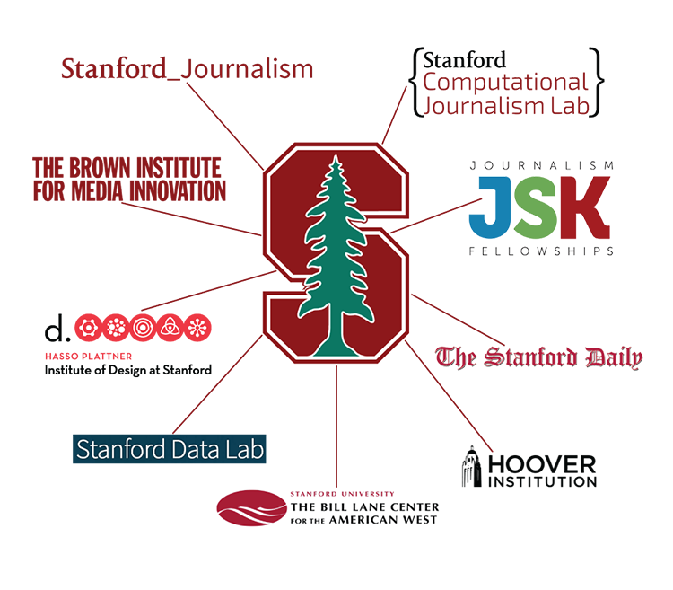

Our Mission
The Stanford Computational Journalism Lab supports the evolution of computational approaches to public affairs journalism through research, teaching and the production of reporting.
What We Do
The CJ Lab surfaces problems faced by reporters to those focused on computational approaches to solving analytical challenges. Classes and projects at the CJ Lab focus on two research questions:
- How do you lower the costs of discovering stories through better use of data and algorithms?
- How do you tell stories in more personalized and engaging ways?
Answering these questions often involves turning unstructured information into structured data for analysis, a challenge pursued by many different parts of the Stanford campus, including:
- Computer scientists at the Brown Institute for Media Innovation
- Design-thinking experts at the d. school (Hasso Plattner Institute of Design)
- Social scientists and digital humanists in the School of Humanities and Sciences
- Virtual reality researchers in the Virtual Human Interaction Lab
- Media professionals teaching in the Stanford Journalism Program.
We’re part of the interdisciplinary ecosystem of journalism innovation at Stanford.
The ultimate goal of the CJ Lab is to produce students, algorithms and investigations that uncover and reveal stories that currently go untold.

Getting Involved
There are many ways to become engaged with the work of the Stanford CJ Lab, including projects, classes, tutorials, conferences and meet-ups. We want to hear from you. Contact us.
If you are interested in following trends in journalism and computation, you can:
Subscribe to newsletters from:
Get on events email list for:
- Stanford Computational Journalism Lab
- Stanford Institute for Research in the Social Sciences
- Stanford Center for Computational Social Science
- Stanford Codex
Join:
Follow on Twitter:
Explore:
Apply:
- Stanford students can apply for MAGIC grants, which support innovative media projects.
Take a Stanford class:
- COMM 273D: Public Affairs Data Journalism I
- COMM 274D: Public Affairs Data Journalism II
- COMM 277P: Programming in Journalism
- COMM 281: Exploring Computational Journalism
- COMM 277B: BigLocal Journalism: A Project-Based Class
- COMM 277I: Investigative Watchdog Reporting
- COMM 277T: Building News Applications
- COMM 280: Virtual Reality Journalism in the Public Sphere
- COMM 242/COMM 142W: Media Economics
- STATS 101: Data Science 101
- ENGR 150: Data Challenge Lab
- ENGR 350: Data Impact Lab
- Stanford Cyber Initiative courses
- Stanford HCI Group
If you’re a potential student, apply for:
If you’re a journalist or media executive, apply for: